USSR · Tier VI
All nations and tiers · EU v20410 → RU v14600ru · 3 November 2026
A-43 · Tier VI
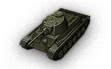
Penetration (mm) 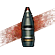
EU  AP 145 /
AP 145 /  APCR 189 /
APCR 189 /  AP 125 /
AP 125 /  APCR 156 / HE 39
APCR 156 / HE 39
Damage (HP)
EU  AP 85 /
AP 85 /  APCR 85 / HE 95 → RU
APCR 85 / HE 95 → RU  AP 115 /
AP 115 /  APCR 110 / HE 165
APCR 110 / HE 165
Firepower
DPM (HP/min) EU 2 312.74  RU 2 180.82
RU 2 180.82
Module damage EU 76  RU 105
RU 105
Rate of fire (rounds/min) EU 27.21 RU 18.96
Reload time (s) EU 2.21 RU 3.16
Caliber EU 57 RU 76
Shell velocity (m/s) EU 990 RU 816
Ammo capacity EU 150 RU 120
Potential damage EU 12 750 RU 13 800
Gun handling
Dispersion (m/100 m) EU 0.33 RU 0.39
Dispersion · damaged EU 0.65 RU 0.79
Dispersion · firing EU 3 RU 3.50
Mobility
Forward speed on soft terrain (km/h) EU 52.86 RU 51.17
Weight (kg) EU 27 105 → RU 27 755
Power/weight (hp/t) EU 23.61 RU 22.86
Tank traverse (°/s) EU 57.36 RU 45.89
Tank traverse on hard terrain (°/s) EU 63.05 RU 53.57
Tank traverse on medium terrain (°/s) EU 56.05 RU 47.62
Tank traverse on soft terrain (°/s) EU 29.67 RU 25.21
Armor & health
Health EU 900 RU 820
Health · engine EU 205 RU 120
Miscellaneous
Stationary camo · after firing EU 3.23 RU 3
Moving camo · after firing EU 2.43 RU 2.25
Shell cost EU 56 RU 80
KV-1S · Tier VI
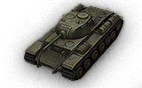
Penetration (mm)
EU HE 61 /  HEAT 150 → RU
HEAT 150 → RU  AP 150 /
AP 150 /  APCR 196 / HE 43
APCR 196 / HE 43
Damage (HP)
EU HE 450 /  HEAT 370 → RU
HEAT 370 → RU  AP 160 /
AP 160 /  APCR 160 / HE 280
APCR 160 / HE 280
Firepower
DPM (HP/min) EU 2 560.09 RU 2 176.70
Module damage EU 165 RU 115
Rate of fire (rounds/min) EU 5.69 RU 13.60
Reload time (s) EU 10.55 RU 4.41
Explosion radius EU 2.49 → RU —
Caliber EU 122 RU 85
Shell velocity (m/s) EU 515 RU 800
Normalization EU 0 RU 5
Ricochet angle EU 90 RU 70
Ammo capacity EU 85 RU 70
Potential damage EU 38 250 RU 11 200
Gun handling
Aim time (s) EU 2.78 RU 2.01
Dispersion (m/100 m) EU 0.46 RU 0.36
Dispersion · damaged EU 0.92 RU 0.73
Dispersion · turret traverse EU 0.14 RU 0.11
Elevation (°) EU 20 RU 15
Mobility
Forward speed on medium terrain (km/h) EU 43 RU 42.17
Forward speed on soft terrain (km/h) EU 24.74 RU 23.83
Engine power (hp) EU 660 RU 634.37
Weight (kg) EU 44 145 → RU 44 045
Power/weight (hp/t) EU 14.95 RU 14.40
Tank traverse on hard terrain (°/s) EU 44.03 RU 46.52
Tank traverse on medium terrain (°/s) EU 40.65 RU 42.94
Tank traverse on soft terrain (°/s) EU 22.97 RU 24.27
Armor & health
Health EU 1 150 RU 1 100
Miscellaneous
Stationary camo · after firing EU 1.57 RU 1.97
Moving camo · after firing EU 0.79 RU 0.98
Shell cost EU 257 RU 109
KV-2 · Tier VI
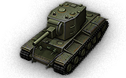
Penetration (mm)
EU  AP 110 /
AP 110 /  AP 136 / HE 86 → RU
AP 136 / HE 86 → RU  AP 167 /
AP 167 /  APCR 219 / HE 54
APCR 219 / HE 54
Damage (HP)
EU  AP 700 /
AP 700 /  AP 700 / HE 910 → RU
AP 700 / HE 910 → RU  AP 300 /
AP 300 /  APCR 300 / HE 360
APCR 300 / HE 360
Firepower
DPM (HP/min) EU 1 825.25 RU 1 935.46
Module damage EU 203 RU 150
Rate of fire (rounds/min) EU 2.61 RU 6.45
Reload time (s) EU 23.01 RU 9.30
Caliber EU 152 RU 107
Shell velocity (m/s) EU 525 RU 830
Ammo capacity EU 36 RU 50
Potential damage EU 25 200 RU 15 000
Gun handling
Aim time (s) EU 3.64 RU 3.26
Dispersion (m/100 m) EU 0.58 RU 0.43
Dispersion · damaged EU 1.15 RU 0.86
Dispersion · firing EU 5 RU 4
Elevation (°) EU 12 RU 18
Mobility
Forward speed on hard terrain (km/h) EU 32.83 RU 32.77
Forward speed on medium terrain (km/h) EU 28.72 RU 28.67
Forward speed on soft terrain (km/h) EU 16.41 RU 16.38
Weight (kg) EU 53 000 → RU 53 100
Power/weight (hp/t) EU 12.08 RU 12.05
Tank traverse (°/s) EU 25.03 RU 20.86
Tank traverse on hard terrain (°/s) EU 27.15 RU 24.33
Tank traverse on medium terrain (°/s) EU 23.76 RU 21.29
Tank traverse on soft terrain (°/s) EU 13.58 RU 12.17
Armor & health
Health · engine EU 205 RU 120
Miscellaneous
Stationary camo · after firing EU 0.61 RU 0.89
Moving camo · after firing EU 0.30 RU 0.45
Shell cost EU 725 RU 270
KV-2 (R) · Tier VI

Mobility
Tank traverse (°/s) EU 25.03 RU 20.86
Tank traverse on hard terrain (°/s) EU 25.03 RU 20.86
Tank traverse on medium terrain (°/s) EU 21.90 RU 18.25
Tank traverse on soft terrain (°/s) EU 12.52 RU 10.43
Armor & health
Health · engine EU 205 RU 120
Loza's M4-A2 Sherman · Tier VI
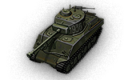
Penetration (mm)
EU  AP 143 /
AP 143 /  APCR 185 / HE 38 → RU
APCR 185 / HE 38 → RU  AP 128 /
AP 128 /  APCR 177 / HE 38
APCR 177 / HE 38
Gun handling
Aim time (s) EU 1.92 RU 2.21
Dispersion · firing EU 3 RU 3.50
Mobility
Forward speed on medium terrain (km/h) EU 51.40 RU 48.38
Forward speed on soft terrain (km/h) EU 37.20 RU 32.25
Engine power (hp) EU 500 RU 433.49
Power/weight (hp/t) EU 14.66 RU 12.71
MT-25 · Tier VI
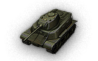
Damage (HP)
EU  AP 115 /
AP 115 /  APCR 115 / HE 165 → RU
APCR 115 / HE 165 → RU  AP 115 /
AP 115 /  APCR 110 / HE 165
APCR 110 / HE 165
Mobility
Forward speed (km/h) EU 67 RU 62
Forward speed on hard terrain (km/h) EU 67 RU 62
Forward speed on medium terrain (km/h) EU 67 RU 62
Forward speed on soft terrain (km/h) EU 67 RU 62
Engine power (hp) EU 800 RU 740
Power/weight (hp/t) EU 30.63 RU 28.33
Tank traverse on hard terrain (°/s) EU 52.07 RU 59.24
Tank traverse on medium terrain (°/s) EU 44.63 RU 50.78
Tank traverse on soft terrain (°/s) EU 20.83 RU 23.70
Armor & health
Health EU 800 RU 660
Miscellaneous
View range (m) EU 370 RU 360
SU-100 · Tier VI
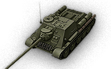
Mobility
Forward speed on medium terrain (km/h) EU 49.92 RU 45.74
Forward speed on soft terrain (km/h) EU 33.28 RU 30.49
Engine power (hp) EU 600 RU 549.79
Power/weight (hp/t) EU 18.36 RU 16.83
Tank traverse (°/s) EU 39.63 RU 37.55
Tank traverse on hard terrain (°/s) EU 40.64 RU 35.83
Tank traverse on medium terrain (°/s) EU 31.93 RU 28.15
Tank traverse on soft terrain (°/s) EU 21.29 RU 18.77
Armor & health
Health · engine EU 205 RU 190
Health · track EU 145 RU 120
Track repair time (s) EU 11.62 RU 12.03
Miscellaneous
View range (m) EU 320 RU 350
SU-8 · Tier VI
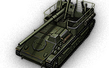
Penetration (mm)
EU  HE 38 /
HE 38 /  HE 48 /
HE 48 /  AP 182 → RU
AP 182 → RU  HE 38 /
HE 38 /  AP 182
AP 182
Damage (HP)
EU  HE 550 /
HE 550 /  HE 650 /
HE 650 /  AP 380 → RU
AP 380 → RU  HE 700 /
HE 700 /  AP 450
AP 450
Firepower
DPM (HP/min) EU 1 543.45 RU 1 904.61
Rate of fire (rounds/min) EU 2.81 RU 2.72
Reload time (s) EU 21.38 RU 22.05
Explosion radius EU 6.70 RU 5.50
Stun duration · maximum (s) EU 11 → RU —
Stun duration · minimum (s) EU 6.60 → RU —
Max range (m) EU 1 343.50 RU 1 467.37
Potential damage EU 14 300 RU 18 200
Mobility
Tank traverse on hard terrain (°/s) EU 24.52 RU 24.51
Tank traverse on medium terrain (°/s) EU 21.02 RU 21.01
Armor & health
Health · engine EU 205 RU 90
Health · ammo rack EU 170 RU 80
Miscellaneous
Shell cost EU 810 RU 970
T-150 · Tier VI
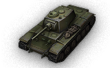
Gun handling
Aim time (s) EU 3.07 RU 3.26
Dispersion (m/100 m) EU 0.38 RU 0.43
Dispersion · damaged EU 0.77 RU 0.86
Dispersion · turret traverse EU 0.14 RU 0.20
Mobility
Forward speed on medium terrain (km/h) EU 35 RU 34.58
Forward speed on soft terrain (km/h) EU 22.20 RU 21.61
Engine power (hp) EU 760 RU 740.10
Power/weight (hp/t) EU 14 RU 13.63
Tank traverse (°/s) EU 29.20 RU 18.77
Tank traverse on hard terrain (°/s) EU 29.95 RU 24.30
Tank traverse on medium terrain (°/s) EU 25.95 RU 21.06
Tank traverse on soft terrain (°/s) EU 16.22 RU 13.16
Armor & health
Health EU 1 050 RU 990
T-34-85 · Tier VI
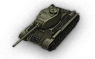
Mobility
Forward speed on soft terrain (km/h) EU 35.01 RU 34.17
Engine power (hp) EU 650 RU 634.37
Power/weight (hp/t) EU 19.32 RU 18.85
Tank traverse (°/s) EU 49.02 RU 39.63
Tank traverse on hard terrain (°/s) EU 52.24 RU 45.75
Tank traverse on medium terrain (°/s) EU 44.20 RU 38.71
Tank traverse on soft terrain (°/s) EU 27.36 RU 23.97
Armor & health
Health EU 950 RU 810
Health · engine EU 190 RU 260
Miscellaneous
Fire chance (%) EU 15 RU 12
T-34-85 Rudy · Tier VI
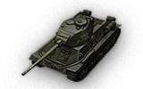
Mobility
Forward speed on soft terrain (km/h) EU 36.46 RU 34.41
Engine power (hp) EU 560 RU 528.64
Power/weight (hp/t) EU 17.24 RU 16.28
T-34-85M · Tier VI
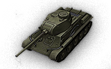
Mobility
Forward speed on hard terrain (km/h) EU 53 RU 52.02
Forward speed on medium terrain (km/h) EU 51.33 RU 50.25
Forward speed on soft terrain (km/h) EU 30.20 RU 29.56
Engine power (hp) EU 540 RU 528.64
Power/weight (hp/t) EU 16.75 RU 16.40